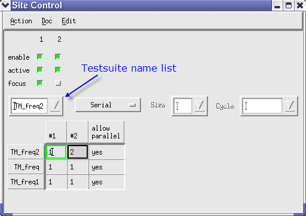

Expanded Site Control window
In the Expanded Site Control window, you can view and change the site test sequence settings of each test suites directly. This is shown in the figure below.
To open the expanded site control window, click in the Site Control Window.

| Test suite name list | Include all the test suites in the testflow. |
| Site control execution mode | The Site Control window allows selecting one of the three options
Parallel, Serial
or Semi-Parallel. In the Test suite properties view, you can set the
mode also to OTHER or
UNDEF. For these modes, the label of the
button shows no mode. The flag allow parallel must be set to yes before Parallel or Semi-Parallel can be selected. Use Parallel or Serial to change the site test sequence from another mode to the parallel or serial execution mode. If you want to execute the test in parallel or serial, you do not have to set the Site test sequence. When Semi-Parallel is selected, the drop down lists Size and Cycle are activated. You need to set the two parameters as shown below. |
| Size & Cycle | Size and Cycle define the automatically
set Site test sequence
for a semi-parallel test. There are two modes to define the automatically set site test sequence for a semi-parallel test:
|
| Site test sequence | The shown sequence is defined by Size and
Cycle settings if the execution mode has
been set to Semi-Parallel. You can also enter the order numbers directly. Hence, you can set up a free site test sequence. In this case, if test sites are added afterward, additional sites will be tested in parallel after tests of the existing sites are completed. Adding the order numbers directly will change the execution mode to an empty field. This mode corresponds to the OTHER setting in the Testflow Properties view. |
| allow parallel | Allow Parallel test suite flag For more information, see Setting Flags for Parallel Execution and Allow Parallel. |
Example
For example, to test sites 1 and 2 in parallel and then sites 3 and 4 in parallel for four-site semi-parallel testing, you can set up the test sequence by specifying Size = 2 and Cycle = Unbounded. Each parallel test in the semi-parallel test will be executed from the group including site 1 in numerical order.
If test sites are added afterward, additional sites will be tested according to the Size and Cycle settings. Therefore, you do not have to set up this again.
The figure below shows three examples of the site test sequence settings including the above typical example.

You can also enter the order numbers directly into the Site Test Sequence field. Hence, you can set up a free site test sequence. In this case, if test sites are added afterward, additional sites will be tested in parallel after tests of the existing sites are completed.
The Parallel and Serial buttons can be used to change the site test sequence from Semi-Parallel or free sequence to the Parallel or Serial sequence.
TIP: You can also set up the site test sequence for all test suites in the Site Control window. If you want to set it up for many test suites once, it is better to use the Site Control window.
Functional changes
- Introduced before SmarTest 6.3.2